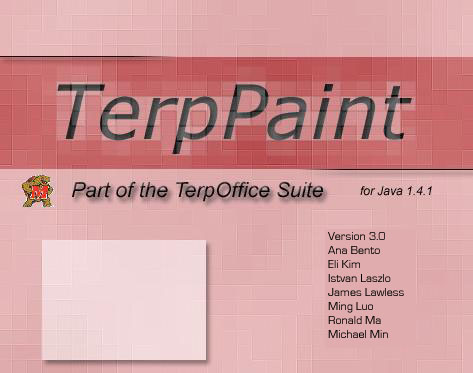
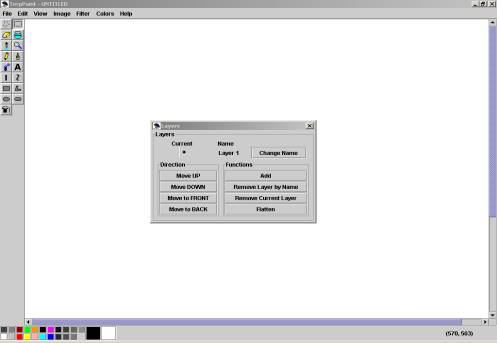

User Manual for Java based terppaint1
version 3.0
Table of Contents
Installation
Guidelines..................................................................................3
Quick Start
Tutorial.....................................................................................3
References...................................................................................................5
Trouble
Shooting...�..................................................................................11
Known
Bugs...............................................................................................11
Index..........................................................................................................12
Installation
Guidelines
Minimum System Requirements:
3 MB of diskspace
32 MB RAM
350MHz CPU
Java Virtual Machine 1.4.1 or higher
Installation:
It is assumed that your environmental variable PATH
is set to include the appropriate Java Virtual Machine. In this case just
run the batch file (terppaint1.bat) for Windows, the make file (make) for UNIX,
and the Runterppaint1(Runterppaint1) script for Mac
If the above method does not work, please do the
following at the command prompt:
Set PATH to include the appropriate Java Virtual
Machine. For example in Windows, you would do something like
set
PATH=c:\jdk1.4.1_02\bin;.
For Windows and UNIX type java terppaint1
Modifications: if you modified our source code, you
would have to re-compile to reflect the changes:
We did not make any packages to confuse you, but you
would have to include all the jar files in the classpath when
compiling. Assuming all the jar files are in the current directory,
for Windows, you would do something like:
set
CLASSPATH=.\mailapi.jar;.\mail.jar;.\pop3.jar;.\activation.jar;.\stmp.jar;.\imap.jar;.
javac *.java
To run terppaint1 after compilation follow the
instructions given in section B
Tutorial
Create a New File And Save
An initializing window pops up when terppaint1 starts
running, it looks like:
After initializing window, terppaint1 should appear on
your screen

One may use the toolbars on the left to draw
different lines or shapes on the canvas. The option box directly beneath
the toolbar, on the left side directly above the color plates, shows the
options of the currently selected tool. For example, if the line tool
were currently selected, the option box would show the different thickness the
line could have.
One may also use the color plates at the bottom (or
the colors menu, as seen above) to change colors. Right click on the
color of your choice will set it as the foreground color, and left click will
set the background color.
To save the changes made to the canvas, click the
File menu, choose Save, then type in the filename you wish to save to and
select the file type in the popup window.
One may use the Layers box, shown in the center of
the screenshot, to manipulate the layers of the current drawing, adding and
removing layers, or moving the current layer back and forth, as well as having
the option to flatten all the layers into one layer.
Open an Existing File to View
Click the File menu and choose open, or use shortcut
key Ctrl-O (the Ctrl key and the O key at the same time).
Select file type and the file name of your choice in
the popup window
You may rotate, stretch, skew, or invert the colors
of the image by clicking the image menu and choose the appropriate
option.
To save the changes made to the canvas please see
part I section E of this tutorial
References
To open a new file
(Ctrl-N)
Click on New from the File menu.
Note: A new white canvas
will be shown.
To open an existing file
(Ctrl-O)
Click on Open from the File menu. A
dialogue box will pop up.
Choose the file existing on the dialogue box and
click OK. The existing file will be open on the current canvas.
To save the current file
(Ctrl-S)
Click on Save from the File menu. If
the file has been saved before, the file will be updated automatically. If the
file has not been saved before, a dialogue box will pop up.
Type the file name that to be saved in the dialogue
box and click OK.
To save to a new location
Click on Save As � from the File menu.
A dialogue box will pop up.
Type the file name that to be saved in the dialogue
box and click OK.
To close the current file
(Alt-F3)
���� Click on Close from the File menu.�
To print preview the
graphic on the canvas
���� Click on the Print Preview from the File menu.� Press Print to print the graphic, and
Close to exit print preview and
return
to the canvas.
To set up the
specification of the printed page layout
Click on Page Setup from the File menu.
The Page Setup dialogue box will pop up.
Modifications can be made in the desired field(s) of
the dialogue box.
To print the graphic on
the canvas (Ctrl-P)
Click on Print from the File menu.
Choose your printer, if applicable, and click OK.
Note: Please make sure the printer is connected before using Print.
To quit the program
(Alt-F4)
Click Exit from the File menu. If the
modified canvas has been saved, the program will exit. If the modified canvas
has not been saved before, the Save dialogue box will pop up.� Choose whether you want to save the changes
made in the modified canvas.
To undo a previous step
(Ctrl-Z)
Click Undo from the Edit menu. The
previous step that has been modified will be recovered.
To undo multiple steps
���� Click Action History to Undo from
the Edit menu.� Choose
the modificaiton that you want to undo.�
If you choose a step
that is multiple steps back in the history, all steps
after that one will also be undone.
To recover an undone step
(Ctrl-Y)
Click Redo from the Edit menu. The
modification which was undone by Undo will be repeated.
Note: Redo only works when Undo has been used.
To cut in the working
canvas
Click the Select tool or Free-form Select tool
from the tool bar.
Click the starting point on the canvas.
Drag to the ending point that you want to be cut.
Click Cut from the Edit menu, or type Ctrl-X.
Note: The selected part of the canvas will be cut. The cut part will show
the background color.
To copy a selected part
to the clipboard
Click Select tool or Free-form Select tool
from the tool bar.
Click the starting point on the canvas.
Drag to the ending point that you want to be copied.
Click Copy from the Edit menu, or type Ctrl-C.
Note: The canvas will not be modified. The selected part will be pasted on the
clipboard.
To paste from the
clipboard
Click the Paste from the Edit menu. The
graphic in the clipboard will be placed.
���������� Note: If nothing in the clipboard,
nothing will be placed on the canvas.
To clear a selected part
of the working canvas
Click the Select tool or Free-form Select
tool from the tool bar.
Click the starting point on the canvas.
Drag to the ending point that you want to be cleared.
Click Clear Selection from the Edit menu,
or type Delete.
Note: The selected part of the canvas will be cleared. The cleared part
will show the background color.
To select the entire
canvas
���� Click Select All from the Edit menu, or type Ctrl-A.
To copy to (export) files
Select the drawing in the canvas, using the same procedure as copy or
cut.
Click Copy To from the Edit menu. A dialogue box will pop up.
Type the file name to save the selection to in the
dialogue box and click OK.
To paste from (import)
files
On the Edit menu, click Paste
From.
Locate and double-click the bitmap
file you want to insert.
Hold down the left mouse button and drag the bitmap where you want it, and then click outside the selection.
To set the preferences
���� Click Preferences from the Edit menu, or type Ctrl-J.� Change the desired preferences (see the next
8 references) and
click
OK.
To set the undo
level preference
���� From the Edit menu, click Preferences.
���� Type the desired undo level into the text box under the Undo Level section.
���� Click OK.
To set the
animation interval preference
���� From the Edit menu, click Preferences.
����
Type the desired animation interval (in Milliseconds) into the text box
under the Animation Interval section.
���� Click OK.
���� From the Edit menu, click Preferences.
���� Click the drop-down box under the Language section, then select your desired language.
���� Click OK.
����������� Note:� The Language preference currently has not been implemented, so the language of the program is always English,
independent of the preference
indicated.
To set the
animation transitions preference
���� From the Edit menu, click Preferences.
���� Click the drop-down box under the Transitions section, then select your desired transition effect.
���� Click OK.
����������� Note:� Currently, only the blur transition is available, or no transition.
To set the number
of loops for animation
���� From the Edit menu, click Preferences.
���� Type the desired number of loops in the text box under
the Transitions section, using �1 for continuous looping.
���� Click OK.
To set the Paste/Import To location preference
���� From the Edit menu, click Preferences.
���� Click
the radio button corresponding to your preference under the Paste/Import To
section.
����������� (Options
are: Current Layer, New Layer, New File and Window, and New
File)
���� Click OK.
To set the file
creation preference on Paste To a File
���� From the Edit menu, click Preferences.
���� Click the radio button for either by Creating the File or Only if it Exists from the Paste To A File section.
���� Click OK.
����������� Note:� This option is only available if New File and Window or New File option is selected in the Paste/Import To
section.
���� From the Edit menu, click Preferences.
���� Click the radio button for Last Size, Prompt, or Fixed Size from the When creating a new file use: section.
���� If you chose Fixed Size, input the width and height in the provided text boxes.
���� Click OK.
To choose color from
color palette
Click the tool from the tool bar with the color you
want to choose.
Use left click to pick the left button color
(foreground) on the palette.
Use right click to pick the right button color (background)
on the palette.
Note:
Left button color will be shown on the left side of bigger box. Right button
will be shown on the right side of the bigger box.
To stretch or skew an
item
Click on Image from the menu bar.
Click on Stretch/skew function.
In the Stretch/skew window under Stretch,
type a percentage amount to stretch your picture horizontally or vertically.
Under Skew, type the number of degrees to skew
your picture horizontally or vertically.
Click OK to apply changes or Cancel to
cancel changes.
To flip or rotate a
picture or object
Click on Image from the menu bar.
Click on Flip/Rotate function.
In the Flip/Rotate options menu, specify to
flip the image horizontally or vertical, or to rotate the image by 90 degrees,
180 degrees, or 270 degrees.
Click OK to apply changes or Cancel to
cancel changes.
To access help menu
Click
on HelpTopic from the menu bar.
To Modify the Attributes
using the Attributes Menu selection
Convert a color image to a black and white image.
Click on Image from the Menu bar.
On the Image Menu, Click Attributes.
Under Colors, Click Black and white.
Click OK to apply changes or Cancel to
cancel changes.
�� Once a change to Black and White operation
has been performed, Switching back to color can only be achieved by
� creating a new
image.
Change the size of the image.
Click on Image from the Menu bar.
On the Image menu, select Attributes.
In the Attributes window, click on the Units
you would like to use.
Type in the measurements of the new image size.
Click OK to apply changes or Cancel to
cancel changes.
There is a difference between resizing the canvas or the drawing area and
resizing the image. When resizing the
canvas,
the existing image is left unmodified, only the drawing area is increased. The
color of the lengthened area is the
user-designated
background at that moment. To resize the canvas, click and drag the lower
right hand corner of the
image.
Resizing the image function is equivalent of a scaling function.
Selecting the Draw Opaque
attribute
Click on Image from the Menu bar.
Check the Draw Opaque box to select the draw opaque
function.
While the Opaque attribute is selected, when using the selection tool and
pasting or moving an area of a selected
image,
the area to which the selected region is moved to gets overwritten by the new
selection. The selected area is
layered
over the existing area where it can no longer be seen.
When the Opaque attribute is not selected, when pasting or moving an area of a
selected image using the selection
tool,
the selected area is transparent. When placed over an existing drawing
area, the new selected layer will be seen
transparent,
showing the lower existing layer(s).
Inverting the colors of
an image
Click on Image from the menu bar.
Select Invert Colors from the menu.
The Invert colors tool inverts the colors of everything on the image.
This is true to both color and grayscale image.
A grayscale
image will have all the colors inverted toward its equivalent opposing
grayscale.
���� Select the region, if not the whole image, to which the filter will be applied.
���� On the Filter menu, click the desired filter (Brightness, Blur, Sharpen, Emboss, or Edge).
Click on Colors from the menu bar.
Select Edit Colors.
Inside the Edit Colors windows, specified the
preferred color by clicking on the color swatch. Three different Color
spectrum pallets can be select from tabs.
Click OK to apply changes or Cancel to
cancel changes.
The primary color will now become the color you have
selected from the custom color window.
Note: Customized colors can also be selected by double clicking the color
swatches from the bottom color tool bar.
The
customize color window will show when double clicking the swatch.
To Free Form Select an
area
Click on Free Form Select from the tool box.
Click and drag the mouse from your first corner to
each vertex of the shape.
Every time your mouse changes direction, a point will
be recorded as a vertex.
Click on the area and drag to move the selected part
of the image.
If Draw Opaque, in the Image menu, is
selected, the background color will be transparent in the selection.
To Select a rectangular
area
Click on Select from the tool box.
Click and drag the mouse.
Release the mouse to complete the rectangle.
Click on the area and drag to move the selected part
of the image.
If Draw Opaque, in the Image menu, is
selected, the background color will be transparent in the selection.
To select an area of a single color (Magic Wand Tool)
���� In the toolbox, click the Magic Wand tool.
���� Click or
right-click the area or object within the color you want to select.
���� Wait
patiently, as this can take a long time, depending on how big the region of
adjacent color is.
���� Select the area using one of the techniques above.
���� Click within the selection, and drag it to where you want it
to be.
����������� Note:� This is
similar to doing a cut-paste-move.
���� Select the area using one of the techniques above.
���� Right-click within the selection, and drag the copy to where you want it to be.
����������� Note:� This is similar to doing a copy-paste-move.
To Erase
Click on Erase from the tool box.
Click and drag over the area to be erased. If a
left click is used, the background color will be used. If a right click
is used the foreground color will be used.
To Fill an area
Click on Fill from the tool box.
Click on an area of the image and all adjacent, same
color pixels will be filled as well as all other same color pixels adjacent to
one that has been filled. If a left click is used, the foreground color will be
used. If a right click is used, the background color will be used.
To obtain a color from an
image
Click on Dropper from the tool box.
Click on the color you want to select. If a left
click is used, the color selected will become the foreground color. If a
right click is used, the color selected will become the background color.
To Zoom on the image
Click on Zoom in the tool box
Left click on the image to enlarge the viewing area.
Right click on the image to reduce the viewing area. Or left click on the
zoom choices in the tool box.
Or
Click on Zoom in the View menu
Chose Normal for 1x or Large for
6x
Note:
Zooming will only be carried out to1x, 2x, 6x and 8x.
To draw
Click on Pencil in the tool box
Click and drag where you would like the pencil to
draw. A left mouse click will draw with the foreground color. A
right mouse click will draw with the background color.
To paint
Click on Paint in the tool box
Choose a brush from the bottom of the tool box or use
the large circle which is the default until another is selected.
Click and drag where you would like to paint. A
left mouse click will paint with the foreground color. A right mouse
click will paint with the background color.
To spray-paint
Click on Spray-Paint in the tool box
Choose a spray-nozzle from the bottom of the tool box
or use the large circle which is the default until another is selected.
Click and drag where you would like to
spray-paint. A left mouse click will spray-paint with the foreground
color. A right mouse click will spray-paint with the background color.
To write text
Click on Text in the tool box
Click on the image where you will want your text to
start.
A dialogue will appear; put your text in the input
field.
Select underline to create underlined text. Select
bold to create bold text. Select italics to create italicized text.
Chose a font and a font size from the respective drop
down boxes if the defaults are not sufficient.
To draw a straight line
Click on Straight-Line in the tool box.
Choose a thickness from the bottom of the tool box or
use the thin line which is the default until another is selected.
Click and drag from the beginning of your line,
release at the end-point of your line. A left mouse click will draw with
the foreground color. A right mouse click will draw with the background
color.
To draw a curved line
Click on Curved-Line in the tool box.
Choose a thickness from the bottom of the tool box or
use the thin line which is the default until another is selected.
Click and drag from the beginning of your line,
release at the end-point of your line. A left mouse click will draw with
the foreground color. A right mouse click will draw with the background
color.
Click on the image with the same mouse button to
curve the line once.
Click at a second point to curve the line towards the
new point.
To draw a rectangle
Click on Rectangle in the tool box
Choose a format from the bottom of the tool box ,
either the default of a transparent rectangle with a border, a rectangle filled
with the opposite color and a border of the current color(see next step), or a
rectangle filled with the current color and a border of the current color.
Click and drag the mouse. If a left click used,
the foreground color is the current color and the background color is the
opposite color. If a right click is used, the background color is the
current color and the foreground color is the opposite color.
Release the mouse to create the rectangle.
To create a polygon
Click on Polygon in the tool box.
Choose a format from the bottom of the tool box ,
either the default of a transparent polygon with a border, a polygon filled
with the opposite color and a border of the current color(see next step), or a
polygon filled with the current color and a border of the current color.
Click and drag the mouse. If a left click used,
the foreground color is the current color and the background color is the
opposite color. If a right click is used, the background color is the
current color and the foreground color is the opposite color.
Click with the same mouse button to choose the other
vertexes of the polygon, repeat as desired.
Click on the tool box to complete the polygon.
A side will be drawn from the last point to the start point.
To draw an ellipse
Click on Ellipse in the tool box.
Choose a format from the bottom of the tool box,
either the default of a transparent ellipse with a border, an ellipse filled
with the opposite color and a border of the current color(see next step), or an
ellipse filled with the current color and a border of the current color.
Click and drag the mouse. If a left click used,
the foreground color is the current color and the background color is the
opposite color. If a right click is used, the background color is the
current color and the foreground color is the opposite color.
Release the mouse to create the ellipse.
To draw a rounded
rectangle
Click on Rounded Rectangle in the tool box.
Choose a format from the bottom of the tool box,
either the default of a transparent rectangle with a border, a rectangle filled
with the opposite color and a border of the current color(see next step), or a
rectangle filled with the current color and a border of the current color.
Click and drag the mouse. If a left click used,
the foreground color is the current color and the background color is the
opposite color. If a right click is used, the background color is the
current color and the foreground color is the opposite color.
Release the mouse to create the rectangle.
To access recent files
Click on file and the recent files will appear
at the bottom of the pull down menu.
To access slideshow
feature
Click
on the Slideshow in the menu bar. A dialog box will pop up.
Select
the folder which has the pictures and click OK.
To add a layer
���� In the LayerBox, click Add under the Functions section.
-or-
���� From the Edit menu, click Layer -> Add Layer.
To view an animation of the layers
���� From the View menu, click Animation.
To change the name of a layer
���� In the LayerBox, click Change Name next to the layer you want to rename.
���� Type in the new layer name, and press OK.
To remove a layer by name
���� In the LayerBox, click Remove Layer by Name under the Functions section.
���� Type in the name of the layer to be removed, and click OK.
-or-
���� From the Edit menu, click Layer -> Remove Layer by Name.
���� Type in the name of the layer to be removed, and click OK.
���� In the LayerBox, click the radio button next to the layer you want to remove, to make it the current layer.
���� Click Remove Current Layer under the Functions section.
���� In the LayerBox, click Flatten under the Functions section.
���� From the Edit menu, click Layer -> Flatten Layer.
���� In the LayerBox, click the radio button next to the layer you want to move, to make it the current layer.
���� Click Move UP from the Direction section.
���� In the LayerBox, click the radio button next to the layer you want to move, to make it the current layer.
���� Click Move DOWN from the Direction section.
To move a layer to the front
���� In the LayerBox, click the radio button next to the layer you want to move, to make it the current layer.
���� Click Move to FRONT from the Direction section.
To move a layer to the back
���� In the LayerBox, click the radio button next to the layer you want to move, to make it the current layer.
���� Click Move to
BACK from the Direction section.
Trouble Shooting
I cannot start terppaint1.
Check to make sure that your
system is using Sun Microsystems� Java� version 1.4.1 or a compatible
implementation.
My computer suddenly goes
off when I am working and I haven�t saved. Will I lose everything?
No. terppaint1 saves 4 backup
files periodically. You can retrieve the most current backup file from the
�images� sub folder of the folder where you were running terppaint1.
Can I copy something from
TerpOffice and paste on terppaint1?
Yes. terppaint1 fully
supports all TerpOffice applications.
My tool bar on the left
side has disappeared.
Make sure use have checked
the Tool Box option under View.
The canvas is too small
for drawing.
The canvas can be enlarged
by clicking and dragging the sides or corners of it.
Known Bugs
Program doesn't remember its state.
The eraser should have various thicknesses.
Moving selected text should not grab always at the
center.
Warning should be issued before converting to
grayscale.
Clearing image should preserve the size.
Creating a new file should re-render the colors if
they have been converted to grayscale.
Polygon selection and moving should be implemented.
Frequent out of memory errors with zoom tool or large
regions of Magic Select tool.
Index
black and white 7
chose color bar 6
clear selected 6
copy 6
curved-line 9
custom color 7
cut 5
dropper 8
ellipse 10
erase 8
exit 5
fill 8
flip 6
free form select 7
invert 7
mail 5
new 5
opaque 7
open 5
paint 8
paste 6
pencil 8
polygon 9
print 5
rectangle 9
redo 5
rotate 6
rounded rectangle 10
save 5
save as 5
select 8
size 7
slideshow 11
spray-paint 9
straight-line 9
stretch 6
skew 6
text 9
undo 5
zoom 8